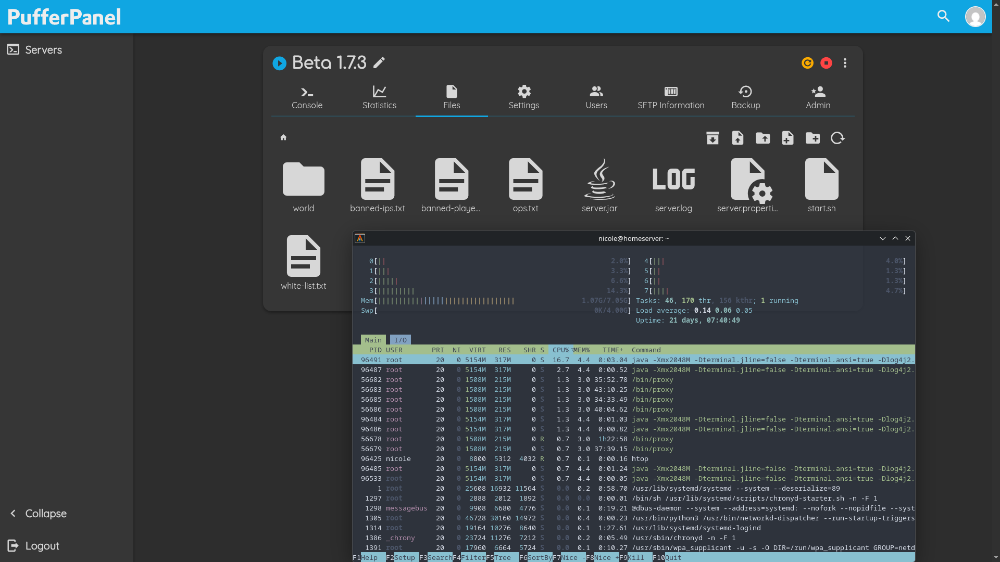
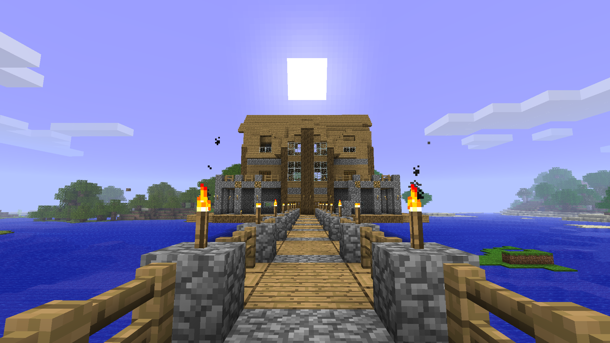
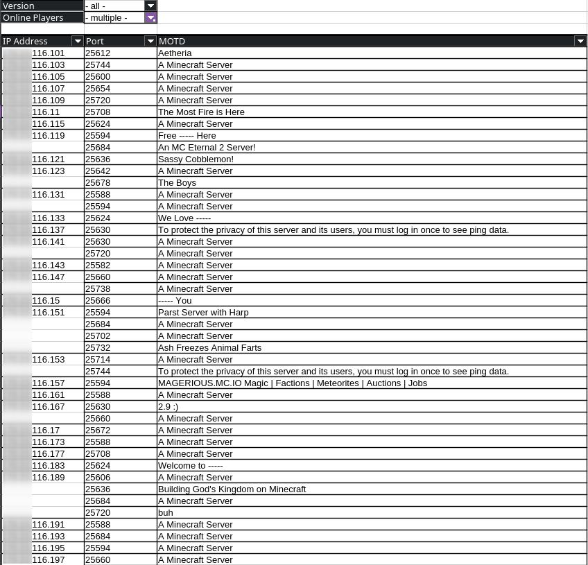
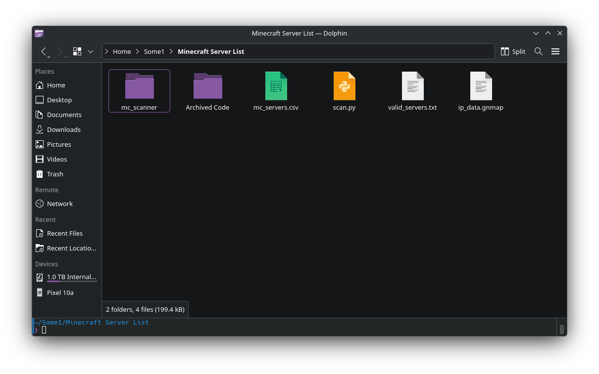

Skills
Soft Skills
- Leadership
- Quick problem solving
- Verbal communication
- Collaboration
- Customer Service
Hard Skills
- Foundations in Python, Java C, C++, HTML, CSS, and JavaScript
- Experience troubleshooting across Windows, MacOS, and Linux
- Proficient in Microsoft Office and Google Workspace
Projects
This is a list of the most relevant projects I've committed to, whether it be a class project or a side hobby.
Home Server
I wiped a spare laptop of mine and flashed it with an Ubuntu Server ISO. I primarily use it to host a 24/7 Minecraft server for me and my friends. I use PufferPanel for a WebUI that my friends can access to start the server, and it also allows me to spin up concurrent servers in docker containers. I have allocated 5 open ports for servers with total isolation and zero hassle Java version management. The image below shows


Cloud VPS
When I set up the Minecraft server, I knew I couldn't port forward on either Starlink or campus Wi-Fi. I had tried a few tunnling services before, but was never happy with the bandwidth limiting. As a solution that doesn't require my friends installing anything, I set up another Ubuntu Server in Oracle's "Always Free" tier to act as a cloud proxy and forward traffic in ports 5657 (SFTP), 8080 (PufferPanel), and 25565-25569 (5 concurrent Minecraft servers).
IP Hunting
A friend of mine is using a paid server hosting provider to run a Minecraft server, and gave me the IP to join it. I realized, however, that the provider was likely hosting multiple servers off of one IP, relying on ports to distinguish the worlds. So, I pinged a range of ports and I found ~15 different servers. Compounding that idea, I used "whois" to identify the range of IPs used to host the servers. With this information, I was able to find 3,500 servers and use mcstatus to catalogue their versions and player counts. I'm not planning on doing anything with the IPs, but I do want to create a UI to easily update and sort through the information.


Education and Experience
I am a second year student at NAU, majoring in Cybersecurity. I currently work under the NAU College of Arts and Letters in the theatre department. While not directly an IT role, it has a lot of overlap in maintaining, setting up, and operating AVL equipment. I have additional customer service experience at Dairy Queen.
Education
| School |
Course |
Title |
Completion |
| Northern Arizona University |
CS 212 |
Web Programming |
In Progress |
| CS 112 |
Computer and Internet Literacy |
| CS 105 |
Computing Tools I |
| CYB 136 |
Secure Design II |
| CYB 126 |
Secure Design I |
Yes |
| Astravo Online Academy |
X |
Intro into Java |
| X |
Principles of Information Technology |
| Shadow Ridge High School |
X |
Coding 1-2 |
Work Experience
| Company |
Position |
Start Date |
End Date |
| NAU College of Arts and Letters |
Stage Technician |
October 2025 |
Present |
| Dairy Queen |
Crew Member |
May 2025 |
August 2025 |